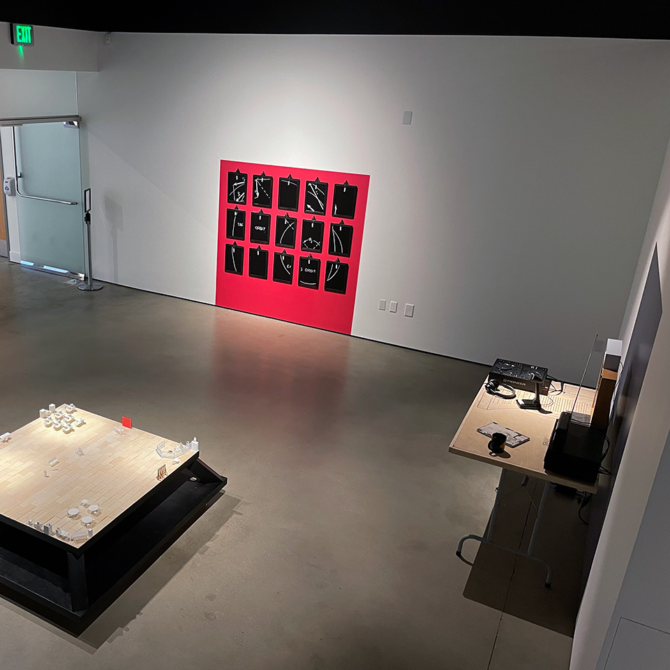
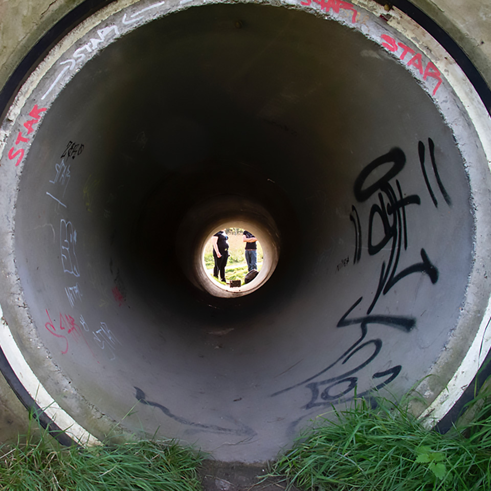
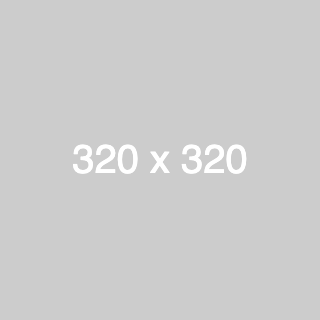

Welcome! This website catalogs my visual artmaking projects. I also DJ
as
Future Ghost and lot of my energy
these days is being put into KDZU, so
definitely head over to those sites to check out what's happening! I'm
also doing a lot of work right now collaborating with the Center for
Land Use Interpretation (CLUI) on the
Remote Sensing project for the Getty's
PST ART: Art & Science Collide
event. I'm post some fun work in progress stuff for that project over
on my blog.

Conjuring speculative collectivities in maps, augmented reality, 1:24
scale models, pirate radio, chalkboards, and show flyers.
An interventionist arcade game (disguised as an ATM Machine) installed
surreptitiously in public spaces. Help free Bucky and Toothy from
economic worry!

I led groups into the woods to create confounding and mysterious sound
installations. Commisioned by the Abandon Normal Devices Festival.

Performance through Elana Mann's Listening as (a) Movement public
acoustic sculpture commissioned by Side Street Projects.
Solenoids twitch in polyrhythms to create an idiosyncratic morse code.
A collab with Deborah Stratman and commissioned by ESS.
A monument to escape created and installed without permission in
Colorado's Prison Valley region. Collaboration with Jen Hofer.
Three lemon and solar-powered sound sculptures exploring speculative
futures of an empty lot in Little Haiti, Miami. Commissioned by
Lotworks.
Reanimated biorhythmic and optical abberations as infrastructure for
the Reanimation Library's Highland Park Branch.
Reanimated diagram of computer terminal as infrastructure for the
Reanimation Library's Highland Park Branch.
A solar-powered performance with sonic boom accompaniment and beehive
smelter reverb chambers for Radius experimental radio.
Enthusiastic encouragement is an evocation of support often instigated
by burning frustration. When performed attentively, it can be highly
rewarding for both the speaker and recipient.
Anticipation is its own special type of euphoria —pre-excitement for
the actual excitement. Anticipation can be the best part of road
trips, blind dates, holidays and birthdays.
A GPS and compass-based "disorienteering" guidebook. Commisioned by
the Abandon Normal Devices Festival.
Touch-activated dioramic "computer" possibly predicting your luck in love.
Turn a record needle into an extremely sensitive recording device. I was able to capture
the footsteps of a fly.
Five seconds of hiccuping fuzzy warbling bliss with cassette tape loops!
Make an eye-catching protest sign with holiday lights, cardboard, and a hot glue gun.
Also, ABOLISH ICE.
I interviewed a 2 year-old to determine their top needs for an a 4x4 truck toy. Cat
wheels and lips for kissing!
I made a creative person's "bug out bag" for on-the-go ideation and making. Also, I was
adopted by a puppy!
Graffiti technology for creating 3D "pixel" art on any ferrous metal surface.
A re-imagining of the U.S. National Park through map making. Let's go canoeing on the
Francisco Ramirez River! Let's take a ride on the Deep Listening Trolley!
An enclosed motorized counterweight keeps an artist's whale guts in motion.
Wind-powered electronics design and implementation for Deborah Stratman's
transmitting and recieving station at the CLUI Orientation Building in Wendover, Utah.
A solar-powered wireless livestream commisioned by Magasin 3 Stockholm Konsthall for
Andrea Zittel's Lay of My Land exhibition.